Spatial visualization functions for terra objects and point data
Source:R/spatialplot.R
spatialplots.RdThese functions provide publication-quality spatial visualizations built on ggplot2, supporting raster images, categorical masks, vector shapes, and point data from the terra package or standard data frames.
Usage
SpatImagePlot(
data,
ext = NULL,
raster = NULL,
raster_dpi = NULL,
flip_y = TRUE,
palette = "turbo",
palcolor = NULL,
palreverse = FALSE,
alpha = 1,
fill_name = NULL,
return_layer = FALSE,
theme = "theme_box",
theme_args = list(),
legend.position = ifelse(return_layer, "none", "right"),
legend.direction = "vertical",
title = NULL,
subtitle = NULL,
xlab = NULL,
ylab = NULL,
seed = 8525
)
SpatMasksPlot(
data,
ext = NULL,
flip_y = TRUE,
add_border = TRUE,
border_color = "black",
border_size = 0.5,
border_alpha = 1,
palette = "turbo",
palcolor = NULL,
palreverse = FALSE,
alpha = 1,
fill_name = NULL,
return_layer = FALSE,
theme = "theme_box",
theme_args = list(),
legend.position = "right",
legend.direction = "vertical",
title = NULL,
subtitle = NULL,
xlab = NULL,
ylab = NULL,
seed = 8525
)
SpatShapesPlot(
data,
x = NULL,
y = NULL,
group = NULL,
ext = NULL,
flip_y = TRUE,
fill_by = NULL,
border_color = "black",
border_size = 0.5,
border_alpha = 1,
palette = NULL,
palcolor = NULL,
palreverse = FALSE,
alpha = 1,
fill_name = NULL,
highlight = NULL,
highlight_alpha = 1,
highlight_size = 1,
highlight_color = "black",
highlight_stroke = 0.8,
facet_scales = "fixed",
facet_nrow = NULL,
facet_ncol = NULL,
facet_byrow = TRUE,
return_layer = FALSE,
theme = "theme_box",
theme_args = list(),
legend.position = ifelse(return_layer, "none", "right"),
legend.direction = "vertical",
title = NULL,
subtitle = NULL,
xlab = NULL,
ylab = NULL,
seed = 8525
)
# S3 method for class 'SpatVector'
SpatShapesPlot(
data,
x = NULL,
y = NULL,
group = NULL,
ext = NULL,
flip_y = TRUE,
fill_by = NULL,
border_color = "black",
border_size = 0.5,
border_alpha = 1,
palette = NULL,
palcolor = NULL,
palreverse = FALSE,
alpha = 1,
fill_name = NULL,
highlight = NULL,
highlight_alpha = 1,
highlight_size = 1,
highlight_color = "black",
highlight_stroke = 0.8,
facet_scales = "fixed",
facet_nrow = NULL,
facet_ncol = NULL,
facet_byrow = TRUE,
return_layer = FALSE,
theme = "theme_box",
theme_args = list(),
legend.position = ifelse(return_layer, "none", "right"),
legend.direction = "vertical",
title = NULL,
subtitle = NULL,
xlab = NULL,
ylab = NULL,
seed = 8525
)
# S3 method for class 'data.frame'
SpatShapesPlot(
data,
x,
y,
group,
ext = NULL,
flip_y = TRUE,
fill_by = "grey90",
border_color = "black",
border_size = 0.5,
border_alpha = 1,
palette = NULL,
palcolor = NULL,
palreverse = FALSE,
alpha = 1,
fill_name = NULL,
highlight = NULL,
highlight_alpha = 1,
highlight_size = 1,
highlight_color = "black",
highlight_stroke = 0.8,
facet_scales = "fixed",
facet_nrow = NULL,
facet_ncol = NULL,
facet_byrow = TRUE,
return_layer = FALSE,
theme = "theme_box",
theme_args = list(),
legend.position = ifelse(return_layer, "none", "right"),
legend.direction = "vertical",
title = NULL,
subtitle = NULL,
xlab = NULL,
ylab = NULL,
seed = 8525
)
SpatPointsPlot(
data,
x = NULL,
y = NULL,
ext = NULL,
flip_y = TRUE,
color_by = NULL,
size_by = NULL,
size = NULL,
fill_by = NULL,
lower_quantile = 0,
upper_quantile = 0.99,
lower_cutoff = NULL,
upper_cutoff = NULL,
palette = NULL,
palcolor = NULL,
palreverse = FALSE,
alpha = 1,
color_name = NULL,
size_name = NULL,
shape = 16,
border_color = "black",
border_size = 0.5,
border_alpha = 1,
raster = NULL,
raster_dpi = c(512, 512),
hex = FALSE,
hex_linewidth = 0.5,
hex_count = FALSE,
hex_bins = 50,
hex_binwidth = NULL,
label = FALSE,
label_size = 4,
label_fg = "white",
label_bg = "black",
label_bg_r = 0.1,
label_repel = FALSE,
label_repulsion = 20,
label_pt_size = 1,
label_pt_color = "black",
label_segment_color = "black",
label_insitu = FALSE,
label_pos = c("median", "mean", "max", "min", "first", "last", "center", "random"),
highlight = NULL,
highlight_alpha = 1,
highlight_size = 1,
highlight_color = "black",
highlight_stroke = 0.8,
graph = NULL,
graph_x = NULL,
graph_y = NULL,
graph_xend = NULL,
graph_yend = NULL,
graph_value = NULL,
edge_size = c(0.05, 0.5),
edge_alpha = 0.1,
edge_color = "grey40",
facet_scales = "fixed",
facet_nrow = NULL,
facet_ncol = NULL,
facet_byrow = TRUE,
return_layer = FALSE,
theme = "theme_box",
theme_args = list(),
legend.position = ifelse(return_layer, "none", "right"),
legend.direction = "vertical",
title = NULL,
subtitle = NULL,
xlab = NULL,
ylab = NULL,
seed = 8525
)Arguments
- data
A
SpatRaster,SpatVector, ordata.framedepending on the function. See individual function descriptions.- ext
A numeric vector of length 4
c(xmin, xmax, ymin, ymax)or aterra::SpatExtentobject. Default isNULL(use full extent).- raster
Whether to rasterize for efficient rendering of large datasets. Default is
NULL(auto-detect: rasterize whenncell > 1e6ornrow > 1e6). Usesscattermore::geom_scattermore()for points.- raster_dpi
A numeric vector of length 1 or 2 specifying the raster output resolution in pixels. Default is
c(512, 512).- flip_y
Whether to negate the y-coordinates so the axis labels can be displayed with reversed sign. Default is
TRUE.- palette
A character string specifying the palette to use. A named list or vector can be used to specify the palettes for different
split_byvalues.- palcolor
A character string specifying the color to use in the palette. A named list can be used to specify the colors for different
split_byvalues. If some values are missing, the values from the palette will be used (palcolor will be NULL for those values).- palreverse
A logical value indicating whether to reverse the palette. Default is FALSE.
- alpha
A numeric value specifying the transparency of the plot.
- fill_name
A character string for the fill legend title.
- return_layer
Whether to return a list of ggplot layers instead of a complete plot. Default is
FALSE. WhenTRUE, the returned list has a"scales"attribute for layer conflict detection, allowing multiple spatial layers in a single custom ggplot.- theme
A character string or a theme class (i.e. ggplot2::theme_classic) specifying the theme to use. Default is "theme_this".
- theme_args
A list of arguments to pass to the theme function.
- legend.position
A character string specifying the position of the legend. if
waiver(), for single groups, the legend will be "none", otherwise "right".- legend.direction
A character string specifying the direction of the legend.
- title
A character string specifying the title of the plot. A function can be used to generate the title based on the default title. This is useful when split_by is used and the title needs to be dynamic.
- subtitle
A character string specifying the subtitle of the plot.
- xlab
A character string specifying the x-axis label.
- ylab
A character string specifying the y-axis label.
- seed
The random seed to use. Default is 8525.
- add_border
Whether to add polygon borders around mask regions in
SpatMasksPlot. Default isTRUE.- border_color
A character string for the border color. Default is
"black". WhenTRUEinSpatShapesPlotorSpatPointsPlot, the border maps to the same variable as fill.- border_size
A numeric value for the border line width. Default is
0.5.- border_alpha
A numeric value for the border transparency. Default is
1.- x
A character string specifying the x coordinate column for
SpatPointsPlotandSpatShapesPlot(whendatais a data frame). Auto-detected from common column names whenNULL.- y
A character string specifying the y coordinate column for
SpatPointsPlotandSpatShapesPlot(whendatais a data frame). Auto-detected from common column names whenNULL.- group
A character string specifying the grouping column for
SpatShapesPlotwhendatais a data.frame. Each unique value in this column defines a separate polygon.- fill_by
A character string or vector specifying the column(s) to map to fill color in
SpatShapesPlot. When multiple columns are provided (all must be numeric), the data is reshaped and faceted. When a single string that does not match a column name, it is treated as a fixed fill color.- highlight
A character vector of row names to highlight, a filter expression string (e.g.,
'cat == "A"'), orTRUE(highlight all). Highlighted points are overlaid with larger markers.- highlight_alpha
A numeric value for highlight transparency. Default is
1.- highlight_size
A numeric value for the highlight marker size. Default is
1.- highlight_color
A character string for the highlight marker color. Default is
"black".- highlight_stroke
A numeric value for the highlight stroke width (added to
border_size). Default is0.8.- facet_scales
Whether to scale the axes of facets. Default is "fixed" Other options are "free", "free_x", "free_y". See
ggplot2::facet_wrap- facet_nrow
A numeric value specifying the number of rows in the facet. When facet_by is a single column and facet_wrap is used.
- facet_ncol
A numeric value specifying the number of columns in the facet. When facet_by is a single column and facet_wrap is used.
- facet_byrow
A logical value indicating whether to fill the plots by row. Default is TRUE.
- color_by
A character string or vector specifying the column(s) to map to point color in
SpatPointsPlot. Multiple numeric columns trigger faceting.- size_by
A character string specifying the column to map to point size in
SpatPointsPlot. Mutually exclusive withsize.- size
A numeric value for a fixed point size in
SpatPointsPlot. Alias forsize_bywhen given a scalar.- lower_quantile, upper_quantile
Lower and upper quantiles for the continuous color/fill scale. The actual cutoffs are determined by these quantiles when
lower_cutoffandupper_cutoffareNULL. Defaults:lower_quantile = 0,upper_quantile = 0.99.- lower_cutoff, upper_cutoff
Explicit lower and upper cutoffs for the continuous color/fill scale. When
NULL(the default), the cutoffs are determined bylower_quantileandupper_quantileviaquantile. Values outside the[lower_cutoff, upper_cutoff]range are clamped (winsorized) to the nearest cutoff value.- color_name
A character string for the color legend title.
- size_name
A character string for the size legend title.
- shape
A numeric value (21–25 for border shapes) or character string specifying the point shape in
SpatPointsPlot. Default is16(filled circle).- hex
Whether to use hexagonal binning in
SpatPointsPlot. Requires a numericcolor_by. Default isFALSE.- hex_linewidth
A numeric value for the hex bin border width. Default is
0.5.- hex_count
Whether to show hex bin count as point opacity. Default is
FALSE.- hex_bins
A numeric value for the number of hex bins. Default is
50.- hex_binwidth
A numeric value for the hex bin width. Default is
NULL.- label
Whether to show group labels in
SpatPointsPlot. Default isFALSE. Requires a categoricalcolor_by.- label_size
A numeric value for the label text size. Default is
4.- label_fg
A character string for the label text color. Default is
"white".- label_bg
A character string for the label background color. Default is
"black".- label_bg_r
A numeric value for the label background corner radius ratio. Default is
0.1.- label_repel
Whether to repel labels from each other and from data points. Default is
FALSE.- label_repulsion
A numeric value for the repulsion force. Default is
20.- label_pt_size
A numeric value for the label anchor point size. Default is
1.- label_pt_color
A character string for the label anchor point color. Default is
"black".- label_segment_color
A character string for the label connector line color. Default is
"black".- label_insitu
Whether to place raw group names as labels instead of numeric indices. Default is
FALSE.- label_pos
A character string or function specifying how label positions are computed per group. Options:
"median"(default),"mean","center","first","last","random","min","max", or a custom function that takes a numeric vector and returns a single value.- graph
Graph/network edge data for
SpatPointsPlot. Can be a square adjacency matrix with row/column names matchingdata, a data.frame with edge coordinates (seegraph_xetc.), a column name or index, or"@graph"(extracts from thedataattribute named"graph"). Default isNULL.- graph_x
A character string for the x start coordinate column in the graph data.
- graph_y
A character string for the y start coordinate column in the graph data.
- graph_xend
A character string for the x end coordinate column in the graph data.
- graph_yend
A character string for the y end coordinate column in the graph data.
- graph_value
A character string for the edge weight column in the graph data.
- edge_size
A numeric vector of length 2 specifying the line width range for graph edges. Default is
c(0.05, 0.5).- edge_alpha
A numeric value for graph edge transparency. Default is
0.1.- edge_color
A character string for the graph edge color. Default is
"grey40".
Value
A ggplot object with height and width
attributes when return_layer = FALSE (the default). When
return_layer = TRUE, a list of ggplot layers with a
"scales" attribute is returned. When faceted via multiple
fill_by or color_by columns, a faceted ggplot
is returned.
Details
SpatImagePlotRender a
SpatRasteras a raster image. Supports single-layer continuous values (with gradient fill) and 3-channel RGB data (with automatic color identity scaling).SpatMasksPlotRender a
SpatRasteras a categorical mask overlay. Zero-valued cells are treated as transparent background; optional polygon borders can be added around mask regions.SpatShapesPlotRender spatial shapes (polygons) from a
SpatVectoror a data frame of vertex coordinates. Supports single and multi-column fill mapping with automatic faceting.SpatPointsPlotRender spatial points from a data frame with support for color/size/fill mapping, hex binning, rasterized rendering, network/graph overlays, labels, and point highlighting.
Rendering Pipeline for SpatImagePlot
Extent cropping — if
extis provided, theSpatRasteris cropped viaterra::crop(). An error is raised if no cells remain within the extent.Auto-rasterization — if the raster exceeds 1e6 cells (or
raster = TRUE), the raster is aggregated viaterra::aggregate()to a target resolution ofraster_dpi.Y-axis flipping — when
flip_y = TRUE, the raster is flipped vertically via.flip_y()and its y-extent is negated so that axis labels can be displayed with reversed sign.RGB detection — if the raster has exactly 3 layers, they are treated as red/green/blue channels: each channel is rescaled to 0–255 and combined into a hex color via
rgb(). Ascale_fill_identity()is used with no legend guide.Single-layer rendering — otherwise, the raster is converted to an x/y/value data frame and rendered via
geom_raster()withscale_fill_gradientn().Layer return or full assembly — if
return_layer = TRUE, the list of layers (with a"scales"attribute set to"fill") is returned. Otherwise,.wrap_spatial_layers()assembles a complete ggplot withcoord_sf(expand = 0), theme, labels, legend, and dimension attributes.
Rendering Pipeline for SpatMasksPlot
Extent cropping — if
extis provided, theSpatRasteris cropped viaterra::crop().Y-axis flipping — when
flip_y = TRUE, the raster is flipped vertically and its y-extent is negated.Background masking — cells with value 0 are set to
NAso they render as transparent viana.value = "transparent".Raster layer — the mask is converted to an x/y/value data frame and rendered via
geom_raster()with a gradient fill scale.Optional borders — when
add_border = TRUE, the mask values are polygonized viaterra::as.polygons(), converted to sf, and overlaid as unfilledgeom_sf()with the specifiedborder_color,border_size, andborder_alpha.Layer return or full assembly — if
return_layer = TRUE, the layers are returned; otherwise,.wrap_spatial_layers()creates the complete ggplot.
Rendering Pipeline for SpatPointsPlot
Column resolution —
xandycoordinates are resolved from the data, auto-detecting common column names ("x","X","sdimx", etc. for x;"y","Y","sdimy", etc. for y) when not explicitly provided.Extent cropping — if
extis provided, rows outside the extent are filtered.Y-axis flipping — when
flip_y = TRUE, the y coordinate column is negated via.flip_y().Multi-column faceting — when
color_byhas multiple columns (all numeric), the data is reshaped to long format with a.facet_varcolumn and faceted viafacet_plot().Cutoff winsorization — for numeric
color_by, values outside[lower_cutoff, upper_cutoff](derived from quantiles or explicit values) are clamped to the nearest cutoff.Graph / network edges — if
graphis provided, edges are resolved from an adjacency matrix, data.frame, or data attribute, and rendered asgeom_segment()segments with line width proportional to edge weight.Main point layer — one of three rendering modes:
- Regular
(
hex = FALSE,raster = FALSE) —geom_point()with shape, size, color, and fill aesthetic mappings. Shapes 21–25 support separate fill and border colors.- Hex
(
hex = TRUE) —geom_hex()orstat_summary_hex()for binned aggregation of numericcolor_byvalues.- Raster
(
raster = TRUE) —scattermore::geom_scattermore()for efficient rendering of large datasets (>1e6 rows).
Highlight — if
highlightis specified, highlighted points are overlaid as larger, colored markers usinggeom_point()orscattermore::geom_scattermore().Labels — if
label = TRUEandcolor_byis a categorical column, group centroid positions are computed viaaggregate()with thelabel_posfunction, and labels are rendered viaggrepel::geom_text_repel()with optional background styling and repulsion.Layer return or full assembly — if
return_layer = TRUE, the layers are returned; otherwise,.wrap_spatial_layers()creates the complete ggplot andfacet_plot()is applied when multi-column faceting is active.
Examples
# \donttest{
set.seed(8525)
# --- SpatImagePlot ---
# Generate a sample SpatRaster
r <- terra::rast(
nrows = 50, ncols = 40, vals = runif(2000),
xmin = 0, xmax = 40, ymin = 0, ymax = 50,
crs = ""
)
SpatImagePlot(r)
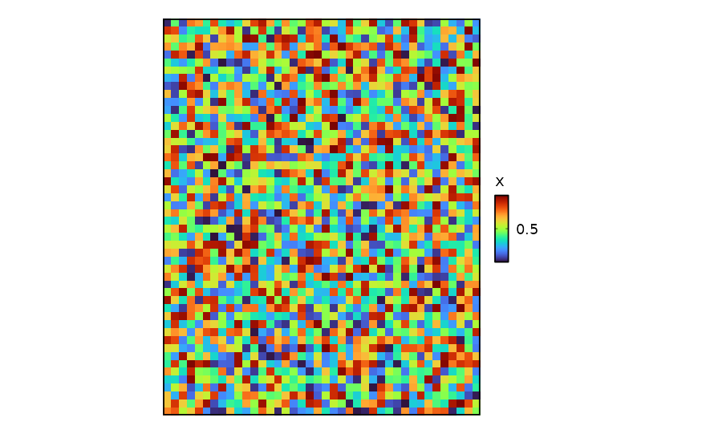
SpatImagePlot(r, raster = TRUE, raster_dpi = 20)
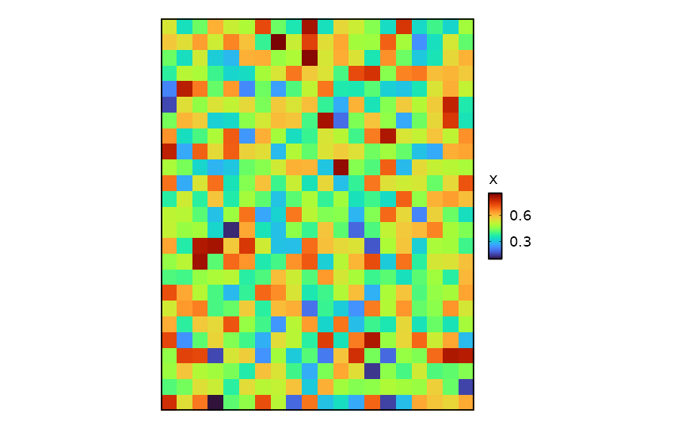
SpatImagePlot(r, alpha = 0.5, theme = "theme_blank",
theme_args = list(add_coord = FALSE), fill_name = "value")
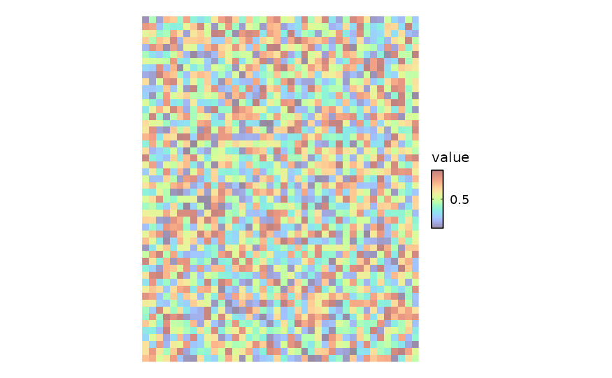
SpatImagePlot(r, ext = c(0, 10, 0, 10), flip_y = FALSE, palette = "viridis")
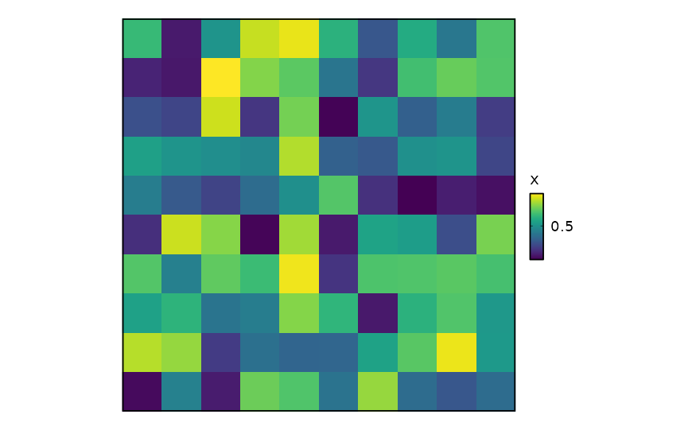
# --- SpatMasksPlot ---
m <- terra::rast(
nrows = 50, ncols = 40,
vals = sample(c(1:5, NA), 2000, replace = TRUE, prob = c(rep(0.04, 5), 0.8)),
xmin = 0, xmax = 40, ymin = 0, ymax = 50,
crs = ""
)
SpatMasksPlot(m, border_color = "red")
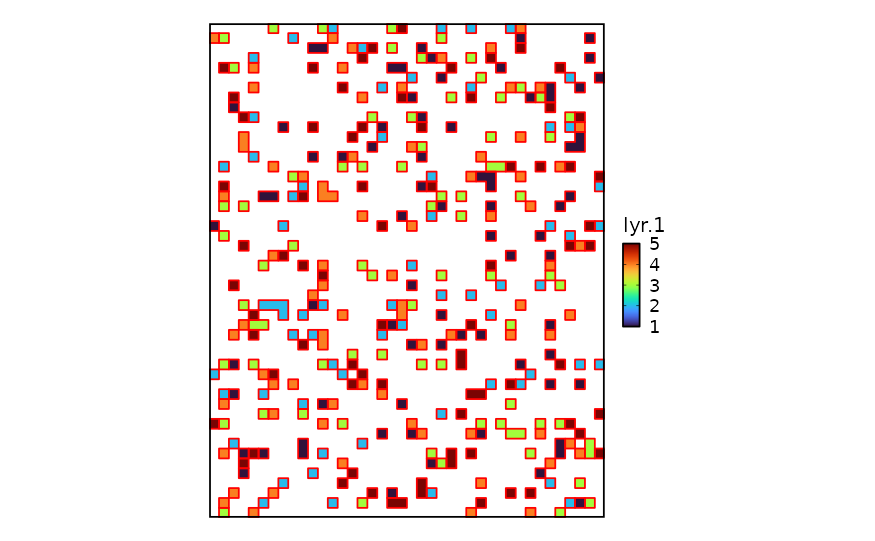
SpatMasksPlot(m, ext = c(0, 15, 0, 20), add_border = FALSE,
palreverse = TRUE, fill_name = "value")
#> Warning: Raster pixels are placed at uneven horizontal intervals and will be shifted
#> ℹ Consider using `geom_tile()` instead.
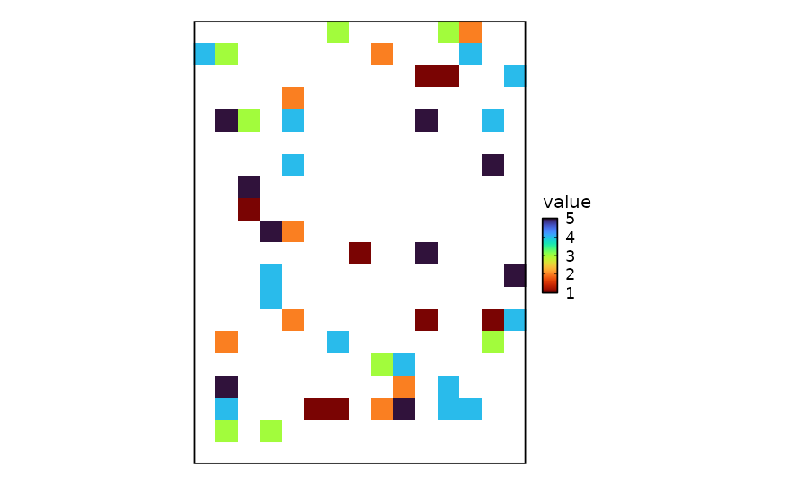
# --- SpatShapesPlot ---
polygons <- data.frame(
id = paste0("poly_", 1:10),
cat = sample(LETTERS[1:3], 10, replace = TRUE),
feat1 = rnorm(10),
feat2 = rnorm(10),
geometry = c(
'POLYGON((64.6 75.3,66.0 70.5,66.4 70.2,67.0 69.8,72.8 70.4,64.6 75.3))',
'POLYGON((56.7 63.0,52.3 65.6,48.0 63.2,51.2 55.7,57.1 59.2,56.7 63.0))',
'POLYGON((9.9 16.5,9.3 15.9,8.0 13.1,11.5 7.8,17.8 11.3,9.9 16.5))',
'POLYGON((64.9 37.2,60.3 37.4,57.6 31.7,58.9 29.3,64.0 28.1,64.9 37.2))',
'POLYGON((30.5 49.1,22.4 46.5,22.4 43.9,30.9 41.9,31.6 42.9,30.5 49.1))',
'POLYGON((78.3 57.8,70.5 61.6,71.6 52.7,72.2 52.5,77.4 54.5,78.3 57.8))',
'POLYGON((41.8 23.8,41.3 25.9,41.0 26.4,36.5 28.7,35.8 28.6,41.8 23.8))',
'POLYGON((15.7 75.9,14.2 74.4,15.7 67.5,23.0 69.8,23.4 71.7,15.7 75.9))',
'POLYGON((80.7 37.4,75.3 31.3,77.1 28.5,82.5 28.0,83.1 28.5,80.7 37.4))',
'POLYGON((15.5 37.8,14.4 38.6,7.3 32.6,8.3 30.9,15.1 30.2,15.5 37.8))'
)
)
polygons <- terra::vect(polygons, crs = "EPSG:4326", geom = "geometry")
SpatShapesPlot(polygons)
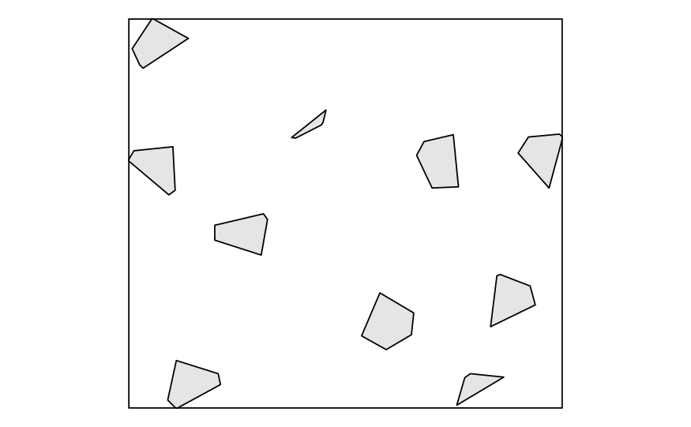
SpatShapesPlot(polygons, ext = c(0, 20, 0, 20))
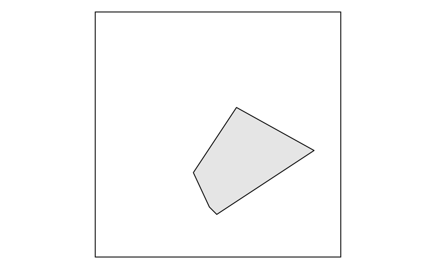
SpatShapesPlot(polygons, highlight = 'cat == "A"', highlight_color = "red2")
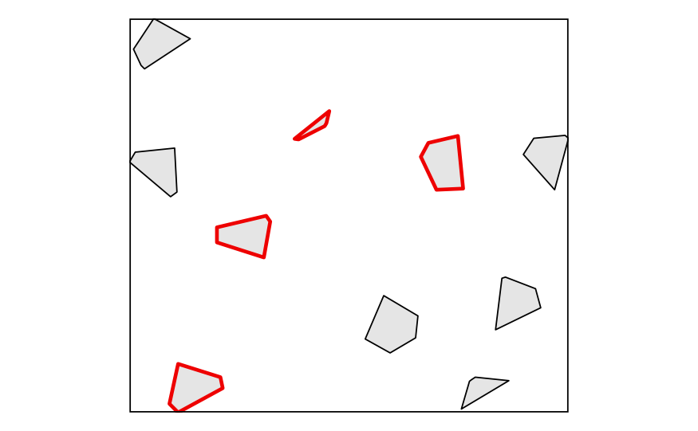
SpatShapesPlot(polygons, border_color = "red", border_size = 2)
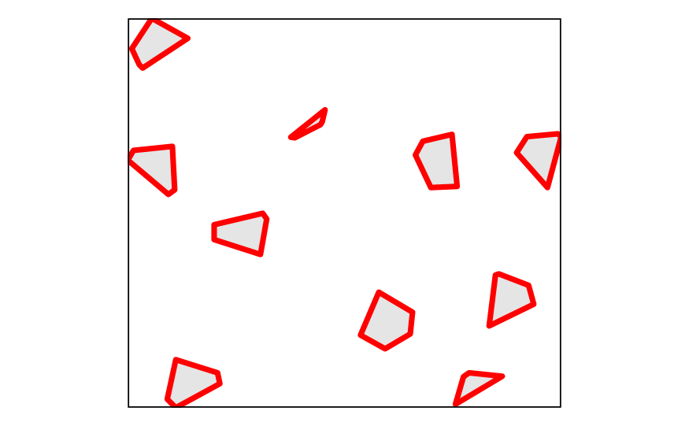
SpatShapesPlot(polygons, fill_by = "cat", fill_name = "category")
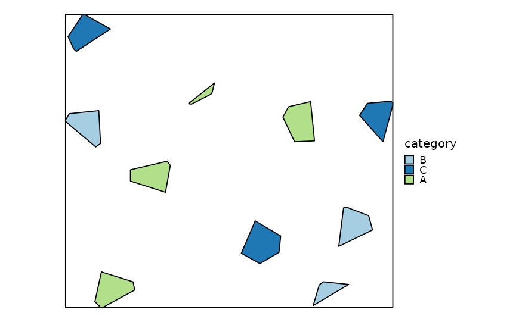
# Let border color be determined by fill
SpatShapesPlot(polygons, fill_by = "cat", alpha = 0.6, border_color = TRUE)
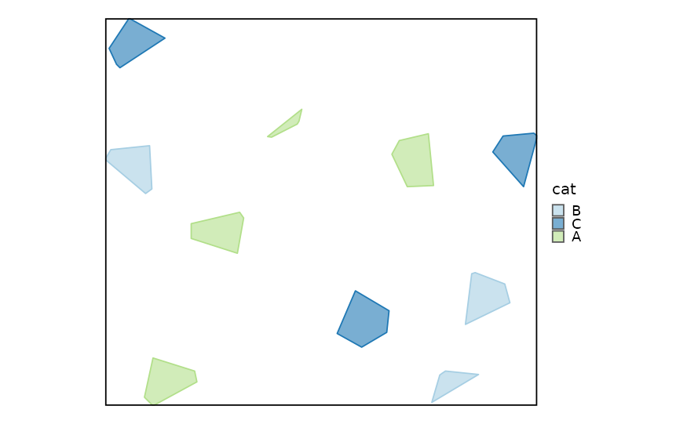
SpatShapesPlot(polygons, fill_by = "feat1")
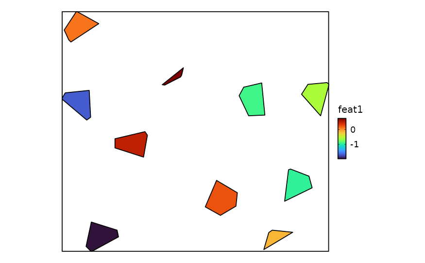
SpatShapesPlot(polygons, fill_by = c("feat1", "feat2"), palette = "RdYlBu")
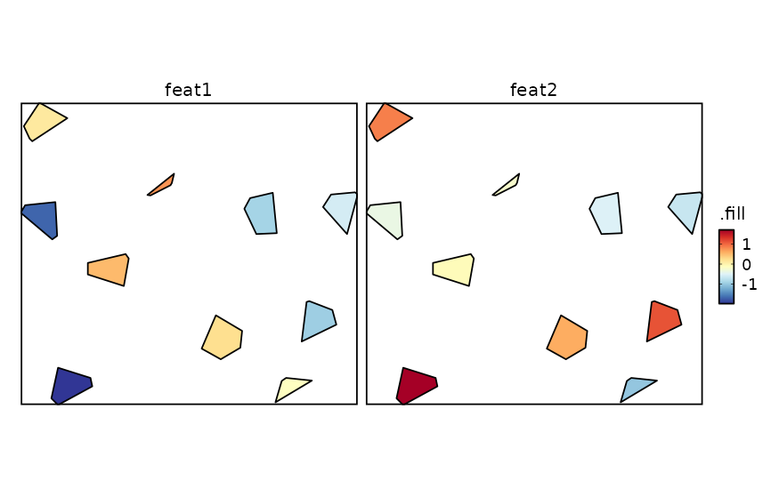
# --- SpatPointsPlot ---
# create some random points in the above polygons
points <- data.frame(
id = paste0("point_", 1:30),
gene = sample(LETTERS[1:3], 30, replace = TRUE),
feat1 = runif(30, 0, 100),
feat2 = runif(30, 0, 100),
size = runif(30, 1, 5),
x = c(
61.6, 14.3, 12.7, 49.6, 74.9, 58.9, 13.9, 24.7, 16.9, 15.6,
72.4, 60.1, 75.4, 14.9, 80.3, 78.8, 16.7, 27.6, 48.9, 52.5,
12.9, 11.8, 50.4, 25.6, 10.4, 51.9, 73.4, 26.8, 50.4, 60.0
),
y = c(
32.1, 12.8, 33.2, 59.9, 57.8, 31.9, 10.1, 46.8, 75.3, 69.0,
60.0, 29.4, 54.2, 34.2, 35.3, 33.1, 74.7, 48.0, 63.2, 59.2,
9.2, 15.1, 64.5, 47.1, 11.4, 60.1, 54.1, 44.5, 61.9, 30.3
)
)
SpatPointsPlot(points)
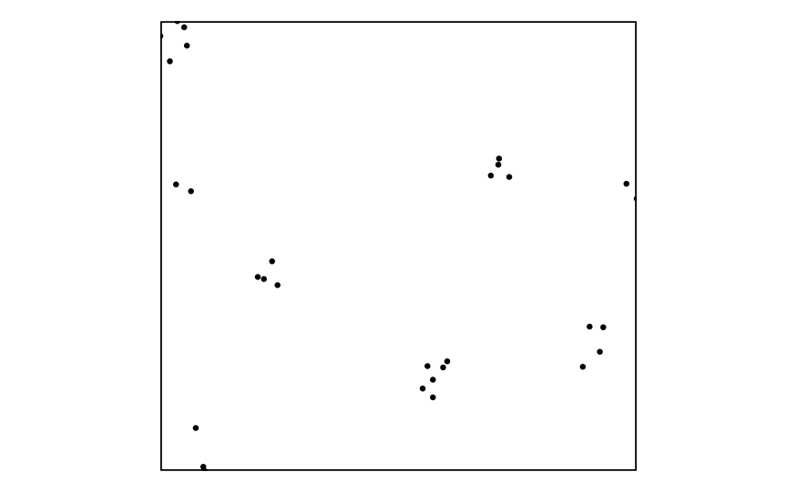
SpatPointsPlot(points, color_by = "gene", size_by = "size", shape = 22,
border_size = 1)
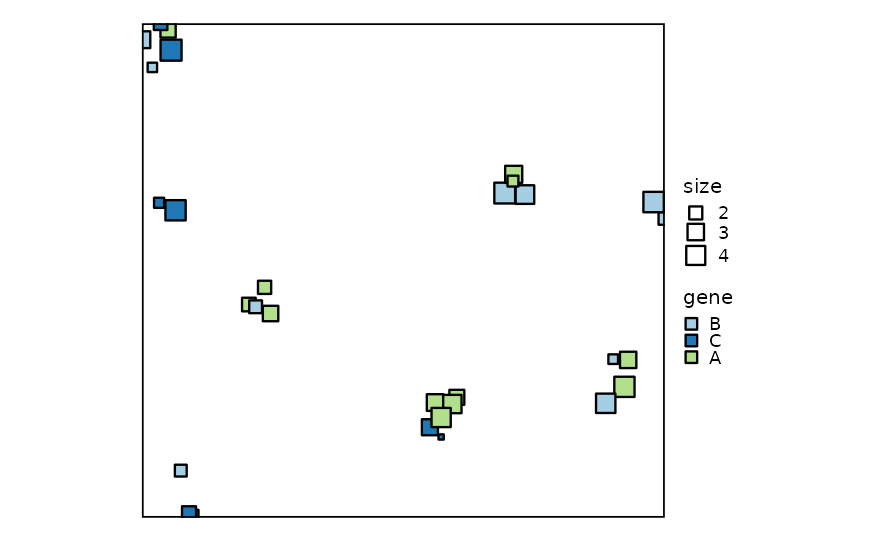
SpatPointsPlot(points, raster = TRUE, raster_dpi = 30, color_by = "feat1")
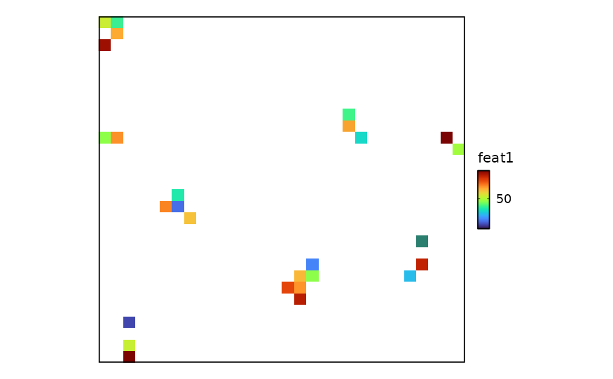
SpatPointsPlot(points, color_by = c("feat1", "feat2"), size_by = "size")
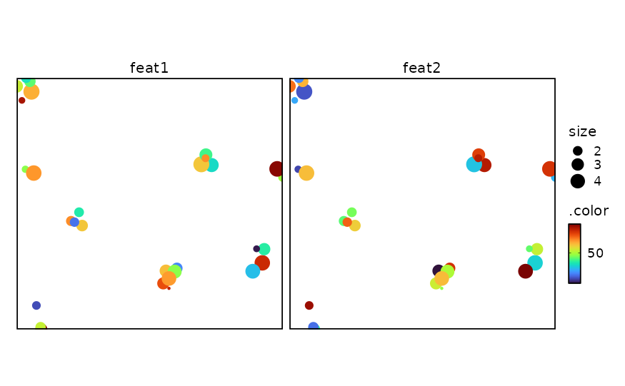
SpatPointsPlot(points, color_by = "feat1", upper_cutoff = 50)
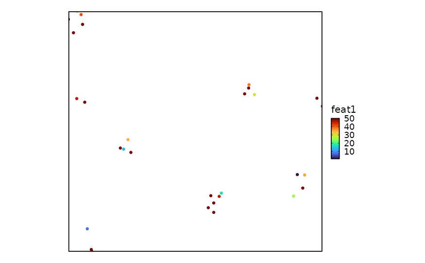
SpatPointsPlot(points, color_by = "feat1", hex = TRUE)
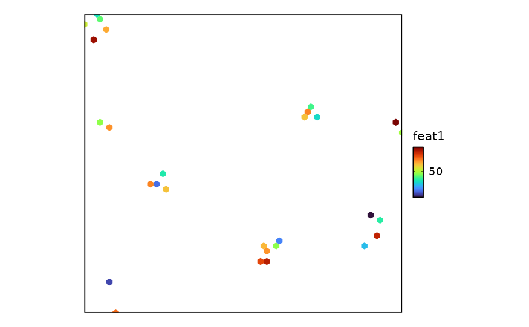
SpatPointsPlot(points, color_by = "gene", label = TRUE)
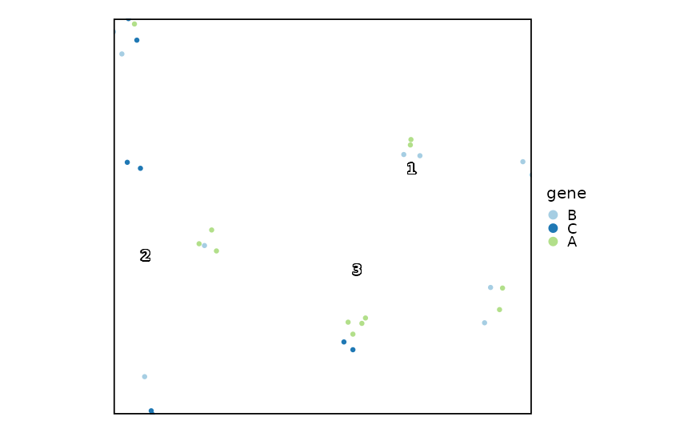
SpatPointsPlot(points, color_by = "gene", highlight = 1:20,
highlight_color = "red2", highlight_stroke = 0.8)
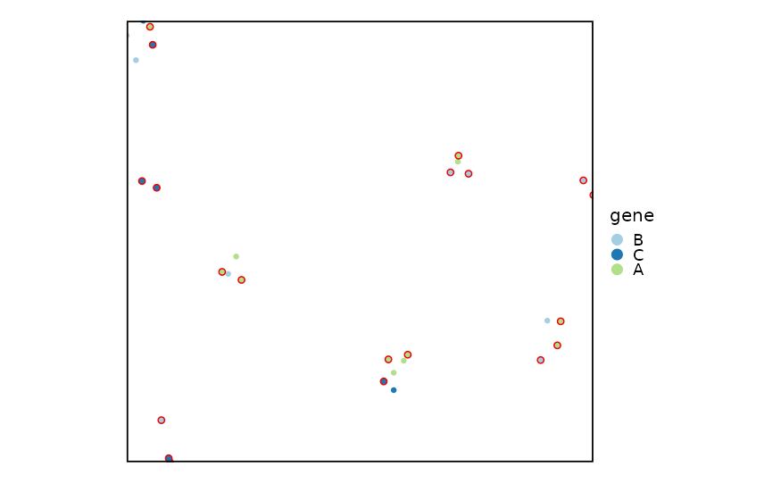
# --- Graph/Network functionality ---
# Create a simple adjacency matrix for demonstration
set.seed(8525)
graph_mat <- matrix(0, nrow = 30, ncol = 30)
# Add some random connections with weights
for(i in 1:30) {
neighbors <- sample(setdiff(1:30, i), size = sample(2:5, 1))
graph_mat[i, neighbors] <- runif(length(neighbors), 0.1, 1)
}
rownames(graph_mat) <- colnames(graph_mat) <- rownames(points)
attr(points, "graph") <- graph_mat
SpatPointsPlot(points, color_by = "gene", graph = "@graph",
edge_color = "grey60", edge_alpha = 0.3)
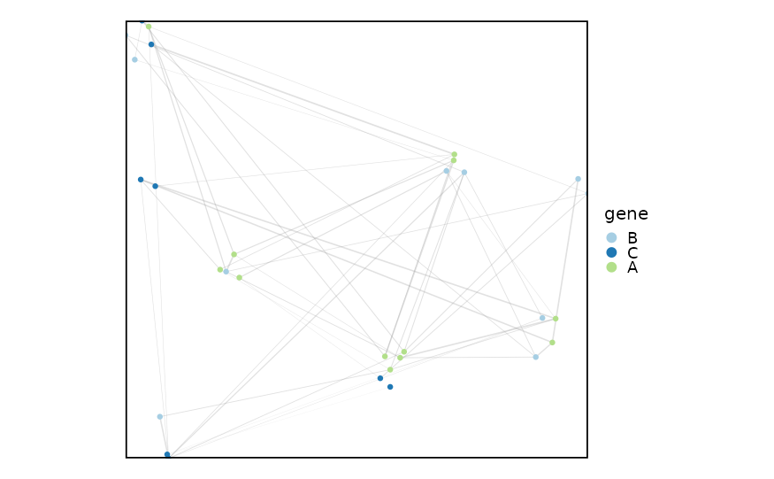
SpatPointsPlot(points, color_by = "feat1", graph = graph_mat,
edge_size = c(0.1, 1), edge_alpha = 0.5)
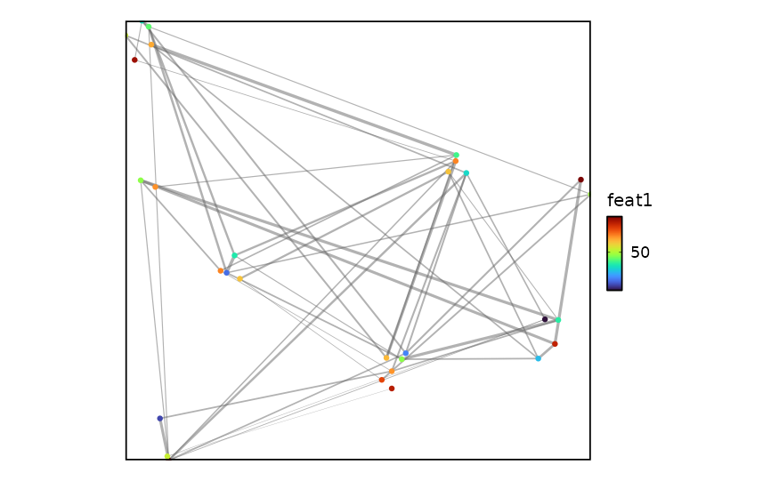
# --- Use the `return_layer` argument to get the ggplot layers
ext = c(0, 40, 0, 50)
ggplot2::ggplot() +
SpatImagePlot(r, return_layer = TRUE, alpha = 0.2, ext = ext) +
SpatShapesPlot(polygons, return_layer = TRUE, ext = ext, fill_by = "white") +
SpatPointsPlot(points, return_layer = TRUE, ext = ext, color_by = "feat1") +
theme_box() +
ggplot2::coord_sf(expand = 0) +
ggplot2::scale_y_continuous(labels = function(x) -x)
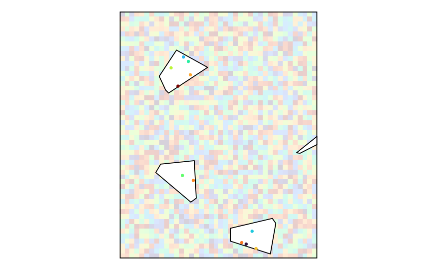
# }